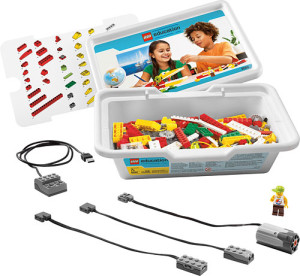

Warsztaty dla dzieci w wieku
Dr. Techniko
Nauka podstawowych reguł myślenia proceduralnego dla najmłodszych.
Opis tematyczny
Na zajęciach dowiemy się co to są roboty oraz poznamy ich tajny język. Nauczymy się pisać programy, na podstawie których nasze roboty będą w stanie wykonać coraz to bardziej skomplikowane misje. W rolę robotów wcielą się … rodzicie. Dzieci będą miały okazję puścić wodze fantazji i zaprogramować rodziców tak, aby choć raz bezwzględnie wykonywali ich polecania.
Wartość merytoryczna
Podstawy myślenia proceduralnego oraz nauka dekompozycji problemów do sekwencji komend.
Wymagania
Poczucie humoru, chęć do zabawy, dla rodziców: wygodny strój pozwalający na wykonywanie (często wielokrotne) sekwencji komend przygotowanych przez dzieci.
Materiały pomocnicze
Robot (w postaci rodzica/opiekuna), którego będziesz programować 
Więcej
LightBot
Wygląd aplikacji

Wartość merytoryczna
Nauka abstrakcyjnego myślenia, podstawy algorytmów, proste sekwencje komend (wstęp do programowania).
Wymagania
Wystarczy znajomość komputera i obsługi myszki komputerowej 
Więcej
Lego® WeDo (Robomaniacs)

Opis tematyczny
Podczas kursu dzieci nauczą się podstaw projektowania, budowania robotów oraz ich programowania z wykorzystaniem zestawów Lego® WeDo. Zajęcia będą bazowały na materiałach pierwszej lekcji programu nauczania, który zawiera 12 aktywności (każda na 2 godziny lekcyjne) podzielonych na cztery grupy tematyczne:
- zadziwiające mechanizmy
- dzikie zwierzęta
- piłka nożna
- przygody
Wartość merytoryczna
Uczestnicy zdobywają wiedzę z zakresu:
- używania i tworzenia programowania,
- wykorzystania sprzężenia zwrotnego w procesie programowania.
- pracy z maszynami prostymi, przekładniami, dźwigniami, wielokrążkami,
- pomiaru czasu i odległości
- operacji matematycznych w tym dodawanie, odejmowanie, dzielenie, mnożenie, szacowanie, losowość, korzystanie ze zmiennych
- rozwijania kompetencji językowych –narracji, pisania, wyjaśniania, interpretacji
- poszerzanie słownictwa z języka angielskiego
Wymagania
Chęć tworzenia zadziwiających robotów, nieograniczona wyobraźnia 
Materiały pomocnicze
Na każdą parę przypada komputer, zestaw klocków Lego® WeDo .
Więcej
http://education.lego.com/en-gb/preschool-and-school/lower-primary/7plus-education-wedo